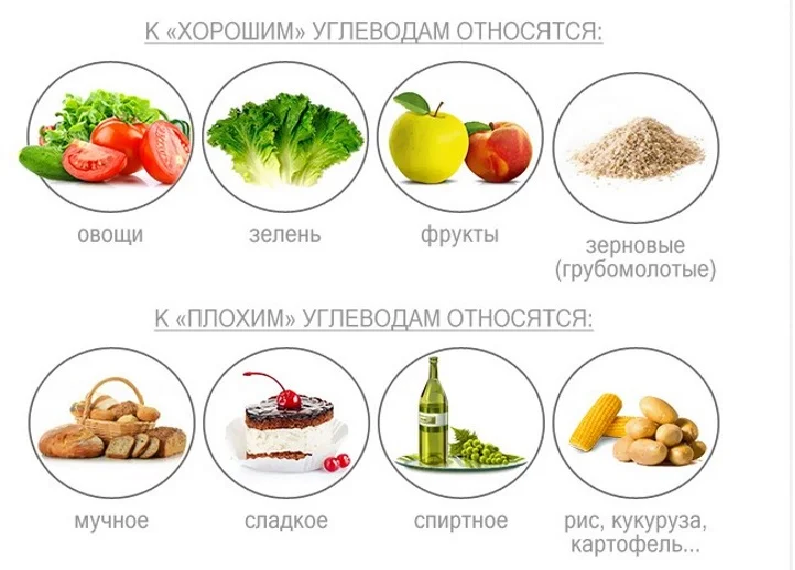
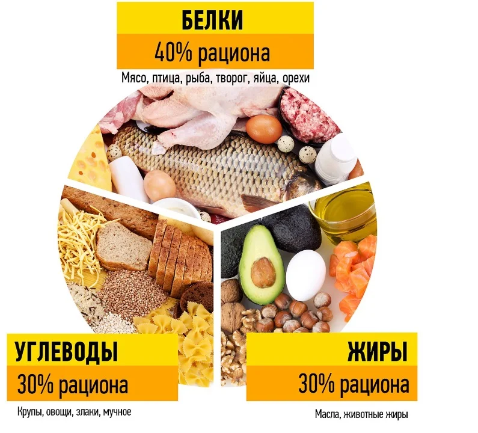

Правильное питание. Персональный сайт Маргариты Ивко =)
Список продуктов, которые следует исключить на стадии активного похудения
Сахар
Конфеты, шоколадки, печеньки, пироженки, сырки глазированные, мармелад, зефир
Виноград, изюм
Мёд
Белый хлеб/батон, булочки (вся магазинная выпечка)
Варенье
Fast food
Бананы (минимизировать)
Белый рис, макароны не из твёрдых сортов пшеницы
Сладкие газированные напитки
Алкоголь, слабоалкогольные напитки и пиво

